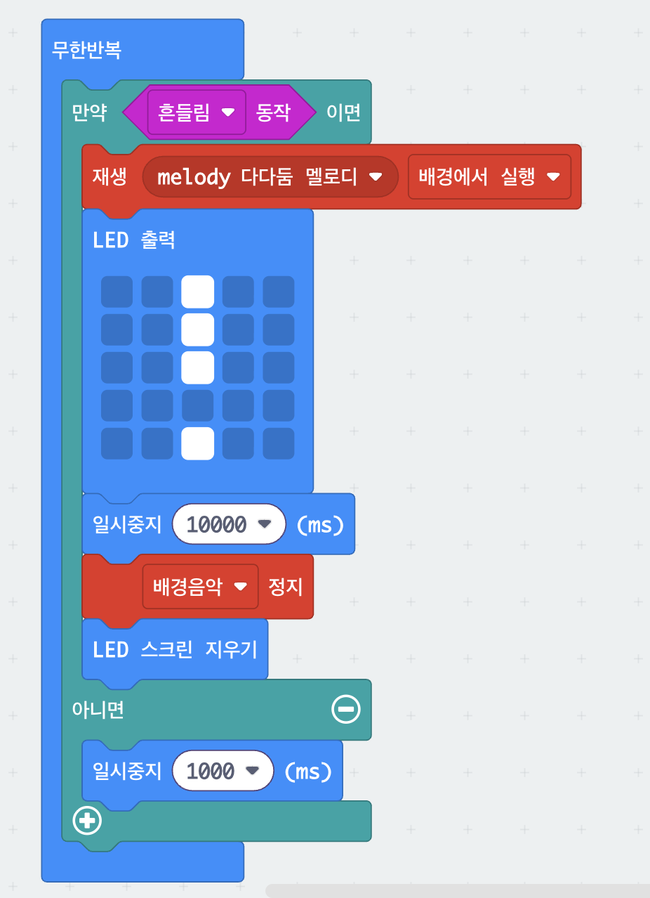

4. 지진 대피 알림
흔들림이 감지되면 경보음을 울리고 화면에 느낌표를 띄우는 장치입니다. 10초 동안 알린 뒤 스스로 소리를 멈추고 화면을 지웁니다. 멜로디를 배경에서 실행으로 켜 두면, 소리가 나는 동안에도 다음 블록이 계속 진행된다는 점이 핵심입니다.
블록 코드
블록을 끌어 옮기거나 마우스 휠로 확대해서 볼 수 있어요. 시뮬레이터로 실행을 누르면 화면 속 micro:bit로 먼저 해 볼 수 있고, MakeCode에서 열기를 누르면 이 코드가 편집기에 그대로 열려 고치고 다운로드할 수 있어요.

코드 주소: https://makecode.microbit.org/S44542-79772-37677-02048
준비물
- micro:bit 본체 1대
- 소리를 들으려면 이어폰 또는 스피커
(V2 본체는 스피커가 들어 있어 그냥 들립니다)
사용법
| 흔들기 | 경보음이 울리고 느낌표가 나타납니다 |
|---|---|
| 10초 뒤 | 소리와 화면이 저절로 꺼집니다 |
막힐 때
소리가 안 들려요.
이어폰이나 스피커가 P0와 GND에 물려 있는지 확인하세요.
micro:bit V2를 쓰고 있다면 본체 스피커로 그냥 들립니다.
흔들어도 반응이 없어요.
살짝 흔들면 감지되지 않습니다. 손목을 이용해 딱 끊어지게 흔들어 보세요.
알림이 끝나기 전에 또 흔들었어요.
10초가 다 지나야 다음 흔들림을 받습니다. 잠깐 기다렸다가 다시 해 보세요.